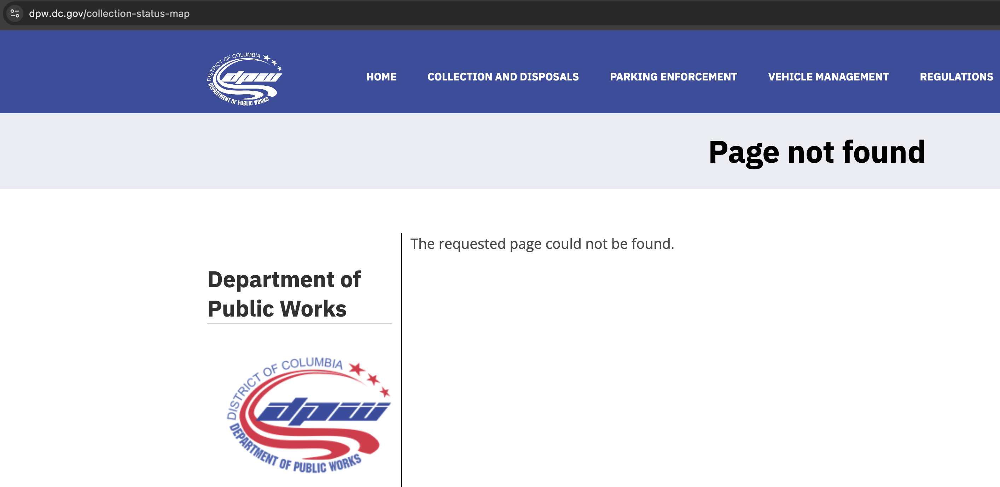

If you don’t care about my editorialization, and just care about the charts, you’re wrong (*unless you’ve already read this), but feel free to explore them directly on the Tables and Graphs page.
In September 2026, the DC Department of Public Works (DPW) launched a Status Collection Map, so that residents serviced by DPW could see when they could expect their trash or recycling to be picked up.
Like the actual solid waste service, as of 9 PM on Wednesday, September 23rd, 2026, that website was not working as intended (screenshot below).

While I'm just some guy, I happen to have some visibility into some of these problems because I've seen neighbors' complaints to DPW in my capacity as an ANC myself. I also have been a little GIS-curious after being out of that game for about a decade now, and I recently got access to the paid version of Google Gemini, courtesy of a Google Drive family plan upgrade. So, inspired by some of Josh Jacobson’s work creating dashboards to supplant insufficient trackers for kiddie pools and rat treatment, I was motivated to make something better.
What I built (with substantial coding assistance from my robot) is a dashboard of 311 requests for missed trash and missed recycling pickup. It offers two time periods to choose from: the last 30 days and the last 180 days (which, notably, entirely falls after the Snowcrete debacle and the March 4th Performance Oversight Hearing - VOD + written responses). It allows you to look citywide, at your Ward, at your Advisory Neighborhood Commission (ANC), or even at your Single Member District (SMD). You want to see what the actual route the pickup drivers are driving? You betcha, that’s there (*both as route lines and as service area polygons, more on that later).
311 requests are an imperfect measure, but I suspect they underestimate missed pickups, because it’s dependent on the individuals reporting them missed. 311 itself has had a smattering of issues this year, many have started using Snap311 instead of the official app, but I digress.
So what are some of the stories I think this dashboard can tell? I can’t figure out all of this, but here are a subset from a few days of manic panic:
I want to briefly talk about routing, as I think it's one of the weirdest quirks of this project, and is more than just a little takeaway, but raises concerns both about service quality AND with data quality. My initial mapping generated routes as polygons - shapes that encompassed trash and recycling routes. But when trying to dig into where these came from, I could not find an official data source accessible on Open Data DC, and again, the DPW official status dashboard is broken. As best I can tell, there are a few things at play.
Gemini/Antigravity seem to have pulled data from sites I cannot directly access. They may have been accessible at the time, they may be APIs or have machine readable information, but I cannot render DPW's Routes Assignment Experience Builder, nor their REST Services Directory, on my browser. I'd love it if someone provided some confirmation or checked my work, or DPW made their publicly accessible dashboards actually work (among other things, cough cough). As a result, there are routes I cannot verify or find record of, like RSP20_2 or RSP50_5, which appear to be the alleyway recycling pickup routes in ANC SMD 2B08 contributing to a high concentration of 311 pickup complaints.
Now because these can't be confirmed, the LLMs are doing a bit of lifting here and I can't figure out how much is predicted text and how much is excerpted text from official sources. When I query an explanation for what the route names mean, it says RSP stands for Recycling Special/Service/Single-stream Program/Packer. The 50 is the route group identifier, and the _5 is the day of the week (Friday). For recycling, 6 of these are identified: RSP10_1, RSP20_2, RSP21_2, RSP30_3, RSP40_4, RSP50_5. Not knowing if they were hallucinated, but not wanting to lose data that may not otherwise be available, I also added layers that are just line routes to the map, using the Collection Points map/list as a verifiable source of truth. Take your pick. For the curious, tinfoil-hat-wearing "I want to believe" among you, the official DPW pickup status map, when it's not broken, does appear to show similar looking alleyway polygons. This lends some credence to there being different routes for these alleys that are not well-documented. DPW has said that they have trouble in these alleys, and it'd be great if someone could confirm that they do actually send a different truck (a small packer, perhaps!) than standard curbside pickup.
The clearest overall theme is that DPW is ignoring their massive service problem. Service across all 8 Wards, all 46 ANCs, all 345 SMDs, and all 223 (103 trash and 120 recycling) routes deserve scrutiny. Ask DPW and they might tell you that there are frequent call-outs, which were more intense in the hottest summer on record, but they have the historical data (or just intuitive knowledge) to predict this, and they could, they should, they must hire more people. Less staff leads to more overtime, which leads to more expenditure, which leads to less staff. It’s a vicious cycle.
DPW has not had a good year. But it’s hard to look at the FY2026 Performance Plan and think key performance indicators have been met. Sure, residential trash and recycling pickup under the Solid Waste Management Administration isn’t all of what DPW does, but it certainly is one of the most salient touchpoints to the District government. If people don’t get routine service—and worse, if people can no longer depend on reporting missed service—faith in basic functions of local government start to erode pretty quickly. My neighbors have had repeat misses and have been frankly gaslit by absurd responses from DPW and their community relations team, and something’s got to give. We need a real plan, and solid, material change, sooner rather than later.
If you’re reading this and you’re a resident who’s missed service: keep reporting to 311, you’re not alone. Write to your ANC, Councilmember, and DPW.
If you’re reading this and you’re in Council: demand answers from DPW and budget them accordingly for fixes. Make sure leadership is held accountable.
If you’re reading this and you’re in DPW leadership: figure out route issues (you can use my tool to find the problems!) and adjust accordingly. Hire more people. Get it right, the city depends on you.
Review citywide charts (Ward volumes, repeat rates, collection day distributions, and daily route averages) and interactive sortable tables for all 8 Wards, 46 ANCs, and 223 DPW collection routes.
View Tables and GraphsExplore the full geospatial map with interactive layers: residential service addresses, cluster heatmaps, official collection points, route lines, and service polygons across 30-day and 180-day windows.
Explore The Map